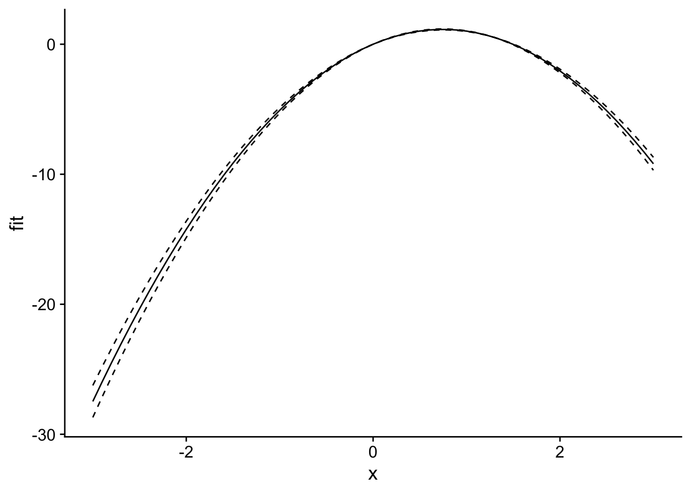

In climate economics and in other settings, we often would like to estimate a response function, or the outcome as a function of some covariate, i.e., \(y = f(T)\). Most of the time, \(T\) stands for temperature. Figure 3 in Carleton and Hsiang (2016) documents a bunch of different response functions from the literature.
Carleton and Hsiang (2016), Figure 3
These models, however, usually include lots of controls, including fixed effects. Consider the following (fairly generic) estimating equation:
\[y_{it} = f(T; \beta) + \phi_i + \varepsilon_{it}\] This model includes unit fixed effects (\(\phi_i\) and \(\phi_t\)}). We include these usually it’s only reasonable to interpret the relationship between \(y\) and \(f(T)\) as causal if we have accounted for potential confounding factors in the cross-sectional and time-series relationships between climate and the outcome. Put another way, it wouldn’t make much sense to attribute the difference between the GDP per capita of Switzerland and the GDP per capita of Mexico to the differences in climate alone, so instead we control for those countries’ average characteristics using fixed effects and estimate the causal relationship using only residual variation in temperature and the outcome. That is to say, we zoom in on years when Switzerland was, say, exceptionally warm and compare its GDP per capita to years when it was exceptionally cold, and then do the same for Mexico.
Computationally, this could mean including a large set of fixed effects, so estimating these models via ordinary least-squares (OLS) using dummy variables is a nonstarter for settings with thousands of fixed effects, computationally speaking. Instead, we use programs such as fixest (there are many others, but fixest is the best one I know of, right now), which use fancy mathematical tricks to alleviate the computational burden.
One of the most intuitive ways to consider the relationships we estimate, particularly when \(f(T)\) is non-linear, is to just plot it, with standard errors included. That’s where we run into some issues. Unlike the base R function lm, fixest does not have a native prediction function that can supply standard errors. This is for a good reason: strictly speaking, predicting the outcome \(y\)requires that we observe the variance-covariance matrix (call it the “vcov”) for all of the terms, including the fixed effects. But one of the side effects of the mathematical tricks we use is that we can no longer obtain the full vcov.
So, we’re basically sunk if we want to plot \(\hat{y}\) with standard errors included. But what if we’re just interested in the relationship between \(T\) and \(y\), holding all the other controls constant? I.e., what if we just want to plot the response function \(f(T)\)? In that case, and assuming a linear-in-parameters model1, we only need the vcov for the coefficients related to the variable we’re allowing to change, in this case \(T\).
To see how this works, consider that a response function is really just the expected value of the outcome across a range of \(T\) (say, 0 to 40) minus \(\hat{y}\) at a single value of \(T\) (say, 20 C). That is, for T = 40, the expected value of
As you can see, the fixed effects drop out, so for this linear-in-parameters model at least we don’t need the entire vcov to generate standard errors for each point on the response curve. So far as I know, though, there’s no easy way to run this kind of prediction without a bit of wrangling. Typically, I’ve used survey::svycontrast to do this sort of thing (see here), but it always felt a bit fiddly. So the following code lets us do this kind of partial prediction easily, by just passing the variables we want to predict over.2
library(fixest)library(ggplot2)library(cowplot)predict_partial <-function(object, newdata, se.fit =FALSE,interval ="none",level =0.95){if(missing(newdata)) {stop("predict_partial requires newdata and predicts for all group effects = 0.") } object <- fit_feols; newdata <- newdata; se.fit = T; interval ="confidence"; level =0.95# Extract terms object, removing response variable tt <-terms(object) Terms <-delete.response(tt)# Remove interceptattr(Terms, "intercept") <-0 X <-model.matrix(Terms, data = newdata)if (class(object) =="fixest") { B <-as.numeric(coef(object)) df <-attributes(vcov(fit_feols, attr = T))$dof.K } elseif (class(object) %in%c("lm", "felm")) { B <-as.numeric(object$coef) df <- object$df.residual } else {stop("class(object) should be lm, fixest, or felm.") } fit <-data.frame(fit =as.vector(X %*% B))if(se.fit | interval !="none") { sig <-vcov(object) se <-apply(X, MARGIN =1, FUN = get_se, sig = sig) }if(interval =="confidence"){ t_val <-qt((1- level) /2+ level, df = df) fit$lwr <- fit$fit - t_val * se fit$upr <- fit$fit + t_val * se } elseif (interval =="prediction"){stop("interval = \"prediction\" not yet implemented") }if(se.fit){return(list(fit=fit, se.fit = se)) } else {return(fit) }}get_se <-function(r, sig) {# Compute linear combination, helper function for predict_partial# Given numeric vector r (the constants) and vcov sig (the ), compute SE r <-matrix(r, nrow =1)sqrt(r %*% sig %*%t(r))}N <-100data <-data.frame(x =rnorm(N), group =rep(c("A", "B"), times = N/2))data$y <-1+3* data$x -2* data$x^2+rnorm(N, 0, 0.5) +as.numeric(data$group =="A") *3fit_feols <-feols(y ~ x +I(x^2) | group, data = data)newdata <-data.frame(x =seq(-3, 3, 0.1))preds <-predict_partial(fit_feols, newdata, se.fit = T, interval ="confidence")plot_df <-cbind(newdata, preds$fit)ggplot(plot_df, aes(x = x, y = fit)) +geom_line() +geom_line(aes(y = lwr), linetype ="dashed") +geom_line(aes(y = upr), linetype ="dashed") +theme_cowplot()

Note that this function also works with lm and felm, though there’s little reason to use it for lm given that predict.lm works (and provides more functionality).
fit_lm <-lm(y ~ x +I(x^2), data = data)preds_lm <-predict_partial(fit_lm, newdata, se.fit = T, interval ="confidence")library(lfe)
Loading required package: Matrix
fit_felm <-felm(y ~ x +I(x^2), data = data)preds_felm <-predict_partial(fit_felm, newdata, se.fit = T, interval ="confidence")
In any case, I’m happy to finally close this issue, given that it’s been on my mind for almost six years.
Footnotes
I’m not actually sure we need to assume this, but someone smarter than me can work out the math of what we could do in the non-linear-in-parameters case.↩︎
This code borrows from code written by Kenny Bell in this StackOverflow post.↩︎